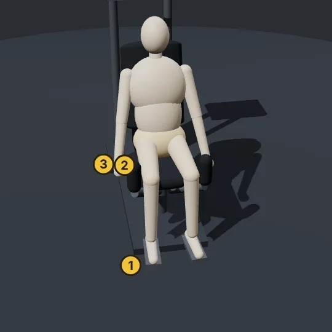

Abductor (apertura delle gambe)
«Busto fermo, apri con le ginocchia, chiudi piano.»

Prima di iniziare
- Siediti con i piedi sulle pedane e le ginocchia piegate circa a 90 gradi.
- Regola la partenza in modo che le gambe partano chiuse ma con il peso già sollevato.
- Schiena appoggiata, mani sulle maniglie.
Esecuzione
- Apri le gambe spingendo con l'esterno delle ginocchia contro i cuscinetti.
- Tieni un istante in apertura.
- Richiudi lentamente senza far sbattere il pacco pesi.